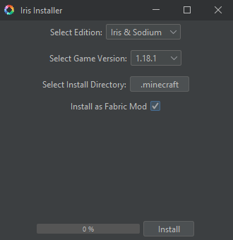

Welche Mods darf ich benutzen?
Bevor du Mods installierst solltest du Iris Shader Mod runterladen. Folge dazu dem Tutorial etwas weiter unten!
Erlaubt sind folgende Mods:
ALLE HERUNTERLADEN (ZIP)Benötigt:
Tutorial
Iris Installer (Download)Als erstes führst du den Iris Installer durch einen Doppelklick aus.
Sollte dies nicht funktionieren probiere Folgendes:
Dieses Fenster sollte sich öffnen:
Stelle alles so ein wie im oberen Bild gezeigt und drücke unten auf "Install"
Nun sollte sich, insofern noch nicht vorhanden, ein mods ordner in deinem Minecraft verzeichnis erstellt haben. Diesen findest du, indem du in der Suchzeile "%appdata%" eingibst, und dann in den .minecraft ordner navigierst. Dort sollten sich nun die Dateien "sodium-fabric-..." und "iris-mc1.18.1..." befinden. Jetzt legst du die .jar Dateien der mods in den mods ordner im .minecraft ordner. Wenn du die ZIP Datei mit allen Dateien herunter geladen hast, musst du diese erst noch entpacken (Rechtsklick -> Alle Extrahieren)
Jetzt startest du in deinem Minecraft Launcher die Version "Fabric Loader 1.18.1"
Solltest du Probleme haben wennde dich einfach an mich (Placeblock#4057)
Happy Playing!